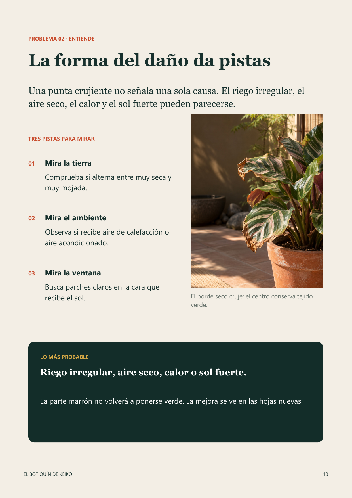
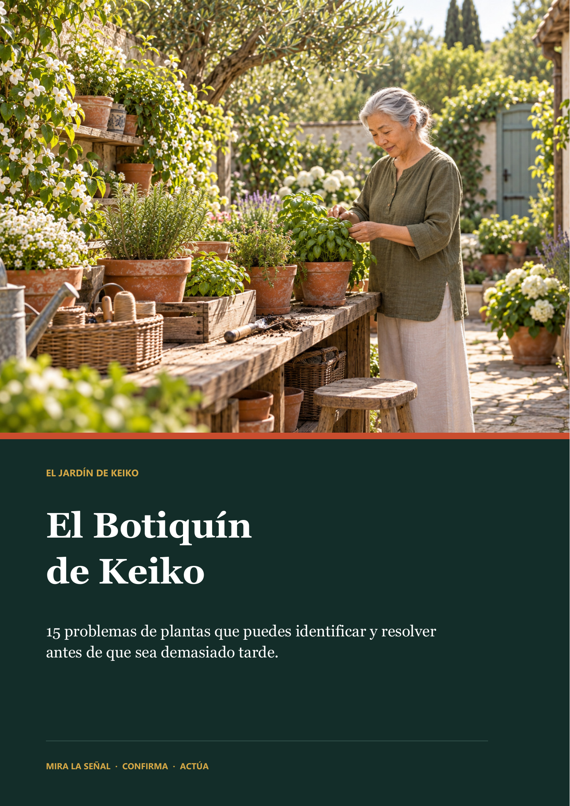
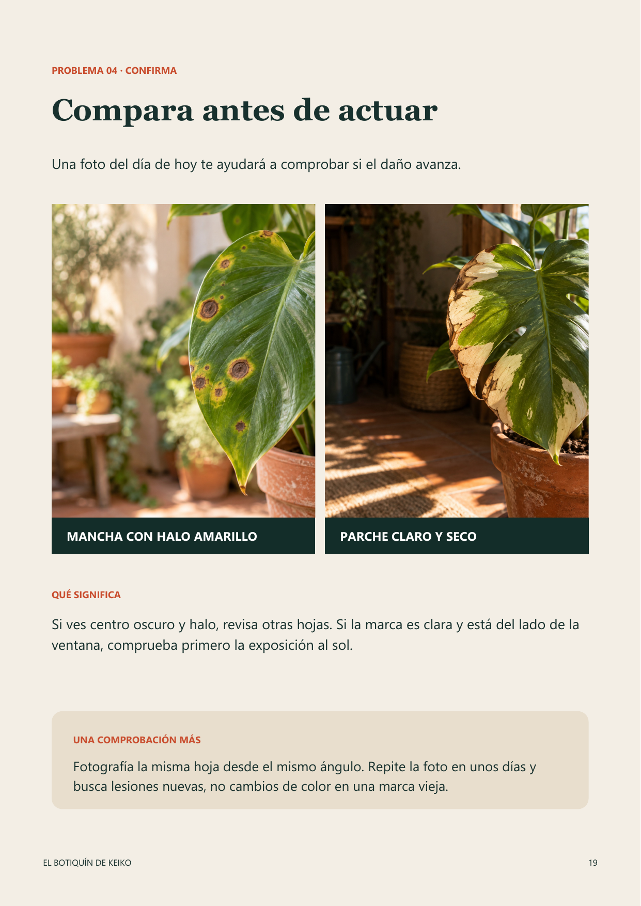
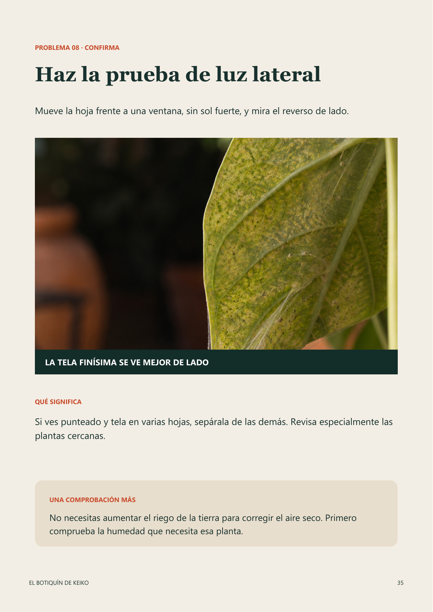
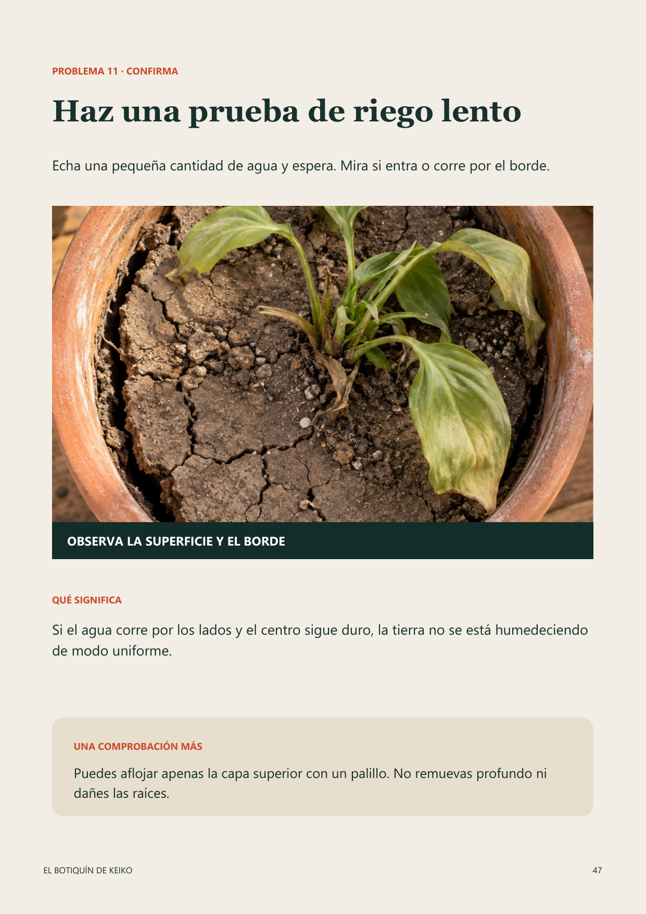

MIRA
Busca la foto y el síntoma que reconoces.
GUÍA DIGITAL EN ESPAÑOL
15 problemas de plantas que puedes identificar y resolver antes de que sea demasiado tarde.
$7.99 USD pago único



“Pequeños cuidados,
grandes resultados.”
— Keiko
HOLA, SOY KEIKO
Cuando una planta se ve mal, no necesita que hagas diez cosas. Necesita que observes una señal, confirmes la causa y hagas primero lo que realmente ayuda.
UN MÉTODO CLARO
Tres pasos simples para entender qué le pasa a tu planta y cómo solucionarlo.
Busca la foto y el síntoma que reconoces.
Lee la comprobación antes de tocar nada.
Sigue las acciones indicadas y vuelve a observar.
CONTENIDO COMPLETO
Una guía práctica, visual y directa al punto.

EL CONTENIDO DEL EBOOK
Empieza por lo que ves, confirma la causa y actúa con calma.
MIRA LO QUE HAY ADENTRO
El índice te lleva al problema. Las fotos te ayudan a confirmar. El plan te dice qué hacer hoy y qué observar después.
QUIERO VER MI BOTIQUÍN →
HISTORIAS DE LA COMUNIDAD
Cuando las lectoras compartan sus historias y autorizen su publicación, las encontrarás aquí.
Por ahora, lo importante es que tu planta tenga una guía clara cuando la necesite.
OFERTA PRINCIPAL
Una guía práctica, visual y directa al punto.
PREGUNTAS FRECUENTES
Aquí encontrarás las respuestas más importantes antes de comprar.
El Botiquín de Keiko es un ebook digital en PDF.
Todo el contenido está en español.
Sí. Puedes consultar el PDF desde celular, tableta o computadora.
Incluye 68 páginas y 15 rutas visuales para identificar y actuar ante problemas comunes de plantas.
El flujo de entrega se mostrará en el checkout cuando esté publicado.
EL JARDÍN DE KEIKO
$7.99 USD
QUIERO MI BOTIQUÍN AHORA →